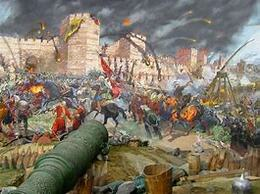
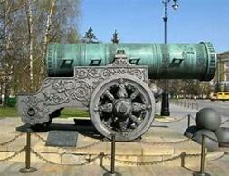
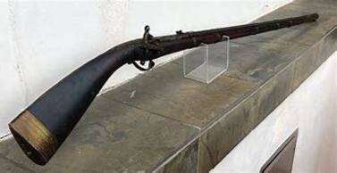
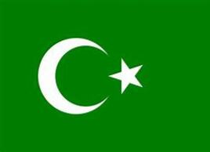
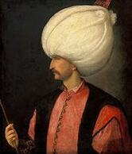

The Ottomans all use to be people from nomadic Turkish tribes that micgrated from Central Asia towards Europe and the Middle East.
They started their empire with a man named Osman that took over surrounding land from the Byzantine Empire. With this land they started expanding and the Christian
Byzantine Empire was worried because of the decline of their empire. With the land expanding and power rising they captured Constantinople in 1453 under Mehmet II and
renamed it Istanbul.

Ottomans built their empire very quickly because of their adaption to modern weapons that gave them an
unfair advantage against other empires. One nutorious weapon they had was the cannon which allowed them to knock down walls that could not withstand their firepower and
muskets allowed foot soldiers to attack against very trained people because of its firepower aswell.

As the empire expanded many people of foreign religions had entered their empire and had many influences, especially Greek and Roman since the conquer of the Byzantine Empire
and Turkish since thats how they originated. Since this mixing in influences the empire was very tolerant of people who believed in other religions, but at the cost additional taxes.

The Sultan of the Ottoman Empire and the Caliph of Islam was Suleiman the Magnificent who reigned from 1520 to 1566. Under his
rule they reached the peak of their power and enterd a Golden Age and had officially become a world power. He has been called "The lawgiver" by Ottomand and "The Magnificent"
by Europeans.

This is a good vacation option if you love to see how things change over the course of history because you'll be
suprised to believe that many of these structures still stand today. If you want to visit a more refined and revised version of the past this is the perfect place for you!
🏠Back To Home🏠